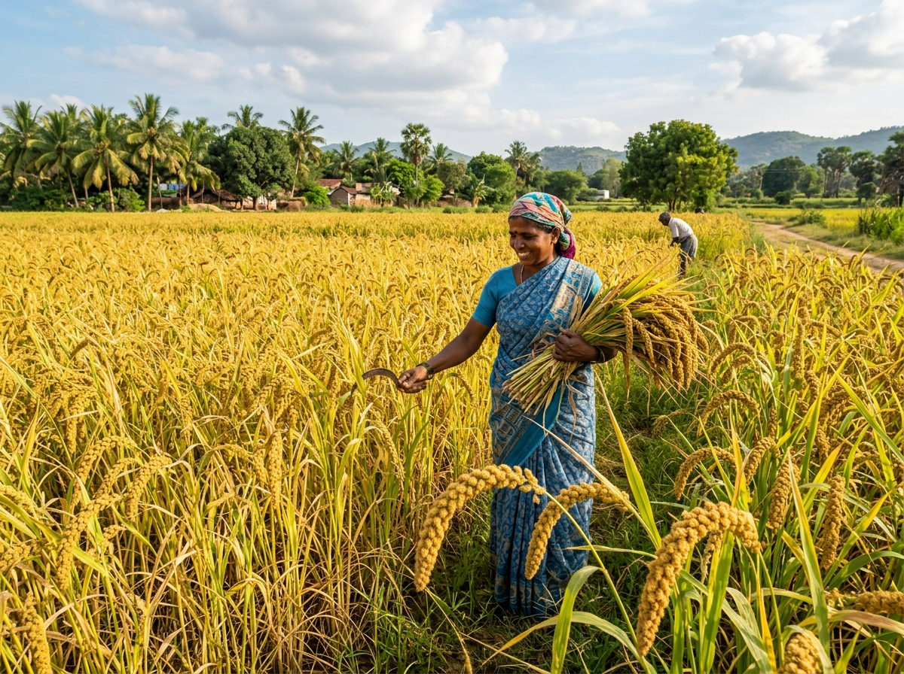
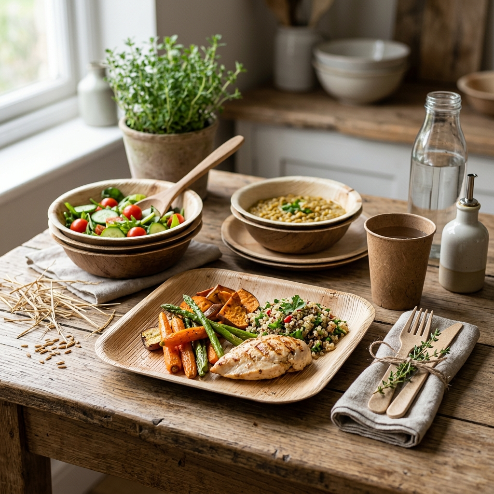
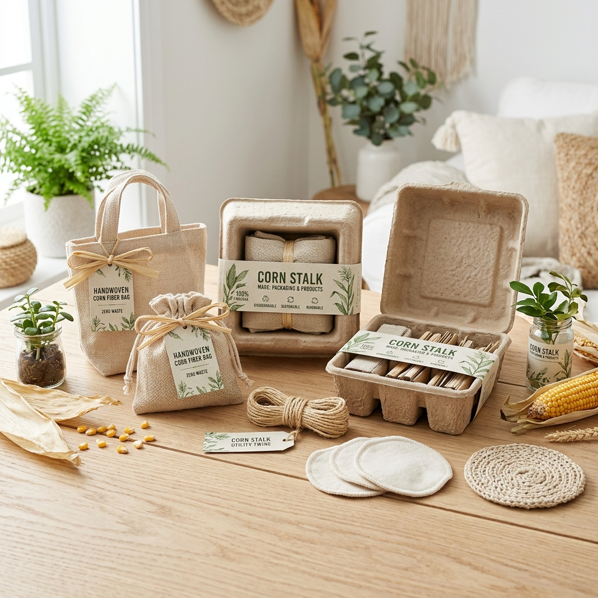
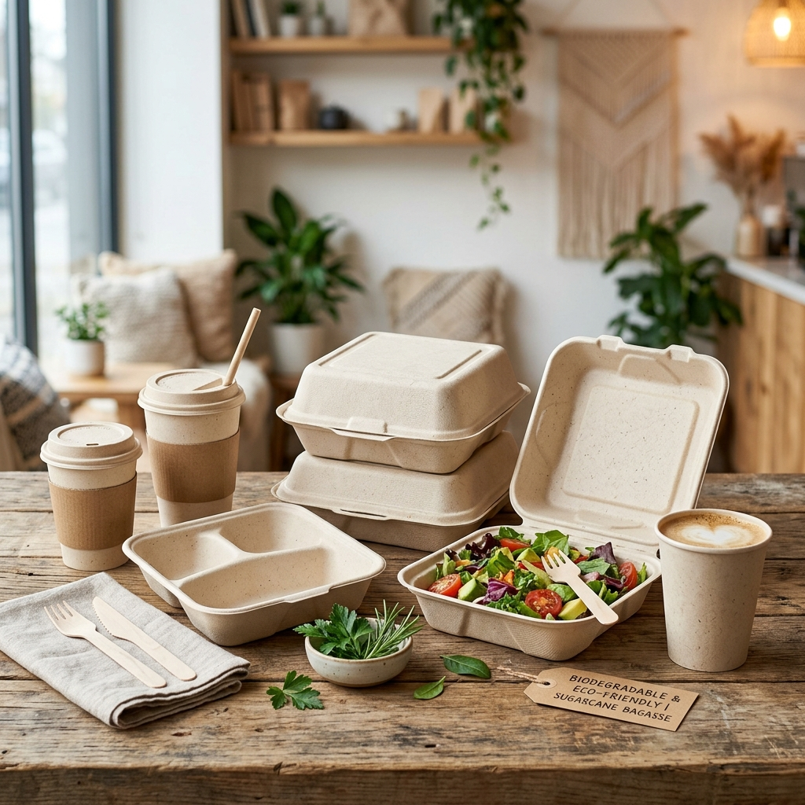
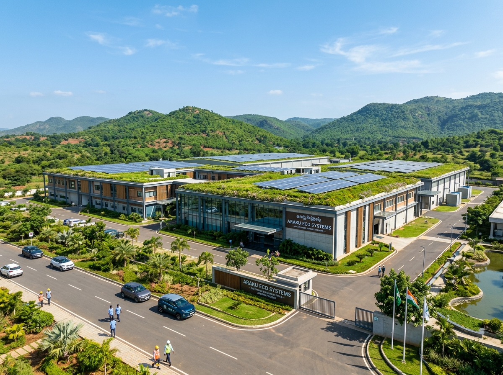

Gen Z TS(Tech Solutions)
the platform that will more helpful to the farmers and turning crop waste into the usefull products.
Our platform empowers farmers to increase income by directly connecting them with buyers. We bridge the gap between agricultural producers and markets, ensuring fair prices and transparent transactions.
We also promote sustainable practices by turning crop waste into valuable products like eco‑friendly plates, fabrics, and bags, creating a circular economy for rural communities.
"Let Us Build a Nation Free from Pollution by Replacing Harmful Plastic with Sustainable, Biodegradable Products—Protecting Our Environment Today, Preserving Our Planet Tomorrow, and Creating a Cleaner, Greener, and Healthier Future for Generations to Come."
Your Farm at a Glance
Track your waste listings, income, carbon savings, and buyer connections all in one place.
Start Earning More in 4 Simple Steps
Whether you want to sell produce directly or monetize crop waste, our platform makes it simple and transparent.
Register Your Produce
Sign up and list your harvest produce or available crop waste. It takes less than 2 minutes.
Get Matched Instantly
Our system connects you with verified buyers and recycling companies in Andhra Pradesh and South India.
Negotiate Directly
Talk directly with buyers — no middlemen, no hidden fees, no commission cuts from your hard-earned income.
Earn Sustainably
Receive fair payment for your produce and generate secondary income by selling crop waste to eco-product manufacturers.
Connecting Buyers Directly with Farmers
Empowering farmers to maximize their income by eliminating middleman commissions and selling fresh paddy, corn, and produce directly.

Millet
Nutritious millet grains, ideal for health‑conscious buyers.
Find Verified Buyers & Startups
Search and connect with trusted buyers, eco-startups, and recycling enterprises across India.
Find Buyers Near You
Enter your pincode or district to discover the closest waste buyers and recyclers.
AI-Powered Farming Tools
Use our intelligent calculators and tools to maximize your income and minimize environmental impact.
Waste-to-Income Calculator
Estimate how much additional income you can earn by selling your crop waste.
Fill the form and click Calculate to see your estimated income.
Crop Waste Calculator
Estimate the amount of waste generated from your harvest.
Select your crop and enter land area to see waste estimates.
Pollution Impact Calculator
See the environmental damage caused by burning crop waste.
Enter tons burned to see CO₂, PM2.5, and health impact data.
Carbon Footprint Tracker
Track how much CO₂ you've saved by selling crop waste instead of burning it.
Waste Burning vs. Selling Comparison
See the stark difference between burning your crop waste and selling it.
If You Burn
- Income: ₹0
- CO₂ Released: —
- PM2.5 Released: —
- Health Impact: —
- Soil Nutrients: Destroyed
If You Sell
- Income: —
- CO₂ Saved: —
- Products Made: —
- Health Impact: None
- Soil Nutrients: Preserved
AI Waste Advisor
Tell us about your crop waste — our AI recommends the best way to monetize it.
Select your waste type and quantity to get personalized recommendations.
AI Waste Identification from Images
Upload or drag-and-drop a photo of your crop waste. Our AI will identify the type and suggest the best use.
Drag & drop an image here
or click to browse
What Can Be Made From Your Waste?
Select your waste type and see all the eco-friendly products that can be manufactured from it.
Waste Listing & Bidding System
Farmers list their crop waste, verified buyers place bids. Get the best price for your agricultural residue.
Live Waste Market Prices
Real-time market prices and demand trends for agricultural waste across AP & Telangana.
Sustainable Alternatives to Plastic
Explore eco-friendly products made from agricultural waste — replacing harmful plastic one product at a time.
What Our Farmers Say
Real stories from real farmers who have increased their income through Gen Z TS.
"Before Gen Z TS, I had to sell my paddy to middlemen at low prices. Now I sell directly to buyers in Hyderabad and earn ₹400 more per quintal. This platform changed my life."
"I used to burn my rice husk every season. Now I sell it to Agriware India and earn ₹15,000 extra per acre. My crop waste is now a source of income!"
"The language support in Telugu makes it so easy. I registered my corn waste in 2 minutes and got a call from a recycling company the same week. Very useful platform."
Turning Crop Waste into Useful Eco-Products
Converting agricultural post-harvest residue (Paddy Husk, Straw, Corn Stalks, Areca Sheath) into high-value eco tableware, biodegradable bags, fiber, and bottles.
Biodegradable Coffee Cup
Elegant coffee cup made from rice husk, compostable within weeks.

Rice Husk & ArecaBiodegradable Plates, Bowls & Cutlery
100% natural tableware produced directly from paddy husk, rice bran, and natural plant fibers.

Corn Starch & PLACompostable Carry Bags, Pouches & Films
Plant-based bio-plastic carry bags manufactured from corn starch, vegetable starch, and PLA.

Crop Straw & BagasseCrop Fiber Clothes, Bio-Bottles & Mulch Films
Innovations converting sugarcane bagasse, paddy straw, and banana fiber into durable textile yarns and eco-friendly water bottles.
AP & TS Enterprise Directory
25+ Verified Companies Converting Agricultural Waste to Useful Products in Andhra Pradesh and Telangana

Schedule a Waste Pickup
Request a pickup for your crop waste. Our partnered logistics will collect it from your farm gate.
List Your Crop Waste for Secondary Income
Are you a farmer with leftover paddy straw, rice husk, or corn stalks? Submit your details below to get purchase offers directly from bioplastic and tableware manufacturers.
Common Questions from Farmers
Everything you need to know about using Gen Z TS to sell produce and crop waste.